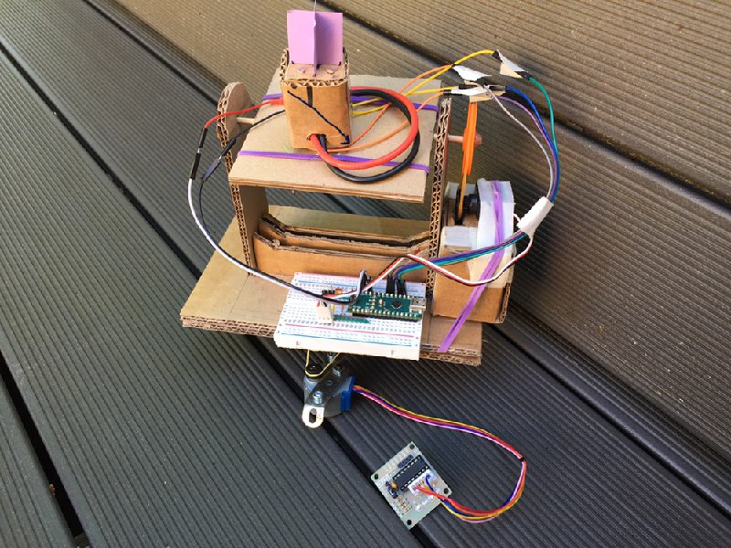
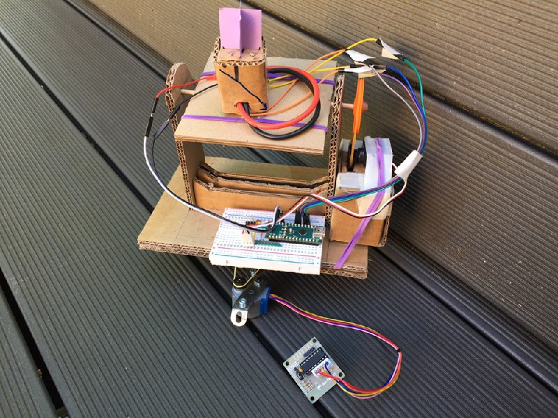

Solar tracker for isn project of terminale (high school).
For more information on this project you can visit the project website.
You can also visit the project's github repository.
Here is the first version of the code to test the efficiency of the omnidirectional solar position sensor :
Photos of the evolution of the project :
 

Sunny © 2018-2019 First working prototype (and some stages of its design)
On this prototype, the tructure in cardboard to be lighter because the servomotors are only 9g ... (so painful), moreover, if you want other information about the project or the code, i encourage you to visit the site as well as the Github repository.